Section 8 Better plots with ggplot2
R’s plotting tools are very good, and in particular, there’s
a great library called ggplot2 that allows you to put together
a huge variety out of plots using a simple system and some
common pieces.
ggplot2 is loaded whenever you use library(tidyverse),
but you can also load it individually:
library(ggplot2)
cow = carData::Cowles
# Recreating the depression variable from before
set.seed(1)
cow$depression = round(
19 +
0.5 * cow$neuroticism +
-0.8 * cow$extraversion +
0.5 * (cow$sex == "female") +
rnorm(nrow(cow), sd = 3)
)8.1 Using ggplot2 properly
ggplot2 will always work best if:
- Everything you want to show in the plot is in a single dataframe.
- Each aspect of the plot is represented by a single column.
- Each column has the right data type, depending
on whether it’s categorical or continuous
(
factorornumeric). - All the data is labelled: categorical variables should already have the labels that you want to show in the plot.
You can make plots work if you don’t have have those things, but they will be much clunkier to put together. Take the time to put the data into the right shape before you try to produce a plot.
8.2 Mapping aesthetics
The most important concept in ggplot2 is mapping
each variable in the data to an aesthetic feature
of the plot. A wide variety of plots can be put together
using a small number of common aesthetics. The aesthetic
mapping for a plot is set up using the aes() function.
Think about a scatterplot - one variable is mapped to the position along the x-axis, and another is mapped to the position along the y-axis. So a basic scatterplot in ggplot is:
ggplot(cow, aes(x = neuroticism, y = depression)) +
geom_point()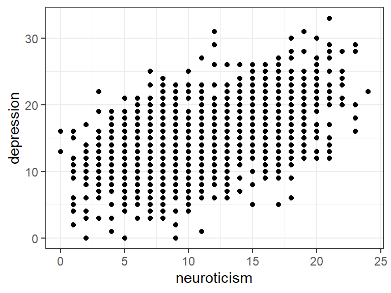
You could also map another variable to the colour of the points:
ggplot(cow,
aes(x = neuroticism, y = depression, colour = sex)) +
geom_point()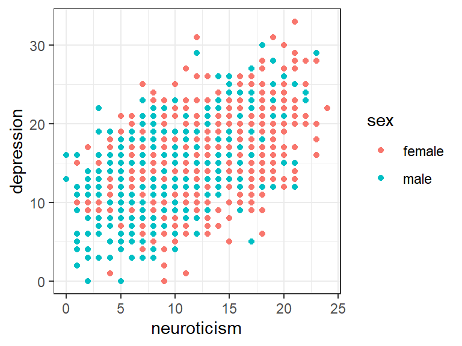
Sometimes you want to change the look of everything in the plot,
without it being specific to individual data points. In that
case, you don’t put it in the aes() mapping, you set it as an
argument for the geom you want to change. Everything
that varies based on data should still go in aes(). For
example, when scatterplots have lots of points it helps
to make them transparent so you can see how many points
are overlapping:
ggplot(cow,
aes(x = neuroticism, y = depression, colour = sex)) +
geom_point(alpha = 0.4)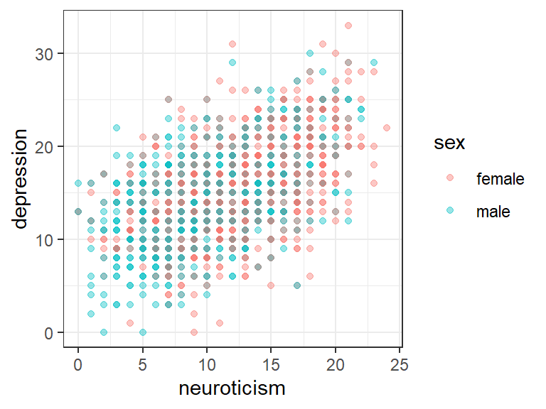
8.3 geoms: representing the data with different components
ggplot2 doesn’t have functions for specific kinds of plots
like a “boxplot” or “bar chart.” It does have all the components
you need to put these together though.
A boxplot will usually have:
- A categorical variable mapped to
x - A continuous variable mapped to
y - Possibly extra variables mapped to the “fill colour” of the boxes.
ggplot(cow, aes(x = sex, y = depression, fill = volunteer)) +
geom_boxplot()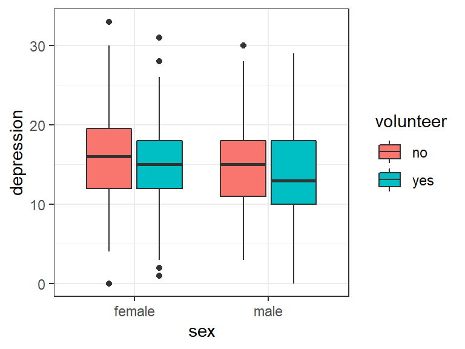
A bar chart will usually have:
- A discrete variable mapped to
x - Another variable mapped to
fillthat defines the subgroups. - No variable mapped to
y:yin a bar chart is normally just the count (number of rows) in each subgroup. - The bars for the subgroups either “stacked” on top of each other or side by side (ggplot2 calls this “dodging”)
ggplot(cow, aes(x = sex, fill = volunteer)) +
geom_bar(position = "dodge")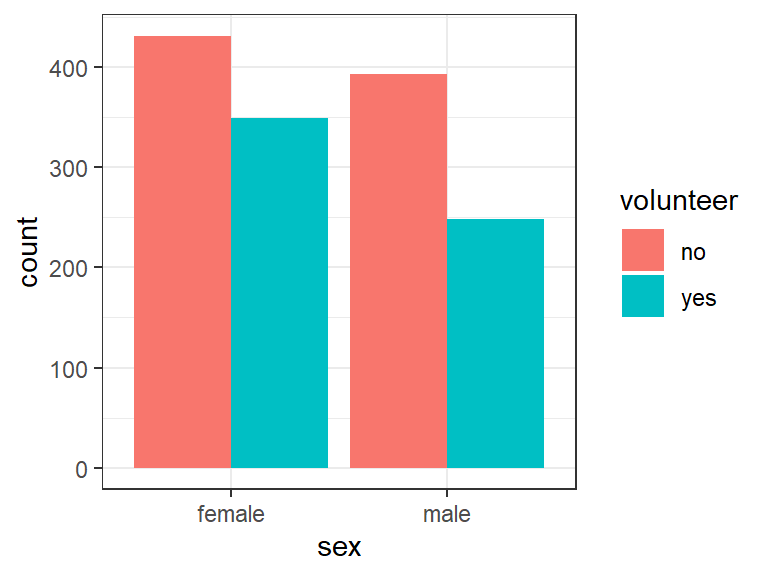
We’ve done some very standard plot types here to help illustrate how each plot can be broken down into its aesthetic mappings, but the real power of ggplot is that you aren’t tied to the standard kinds of plots - you can mix and match their components to produce a unique plot that shows exactly what you want.
8.4 Combining geoms
Here we’ll produce a plot that shows:
- The individual data points (“jittered” a bit so they don’t all overlap)
- Contours that show how dense the points are
- A “line of best fit” that shows the overall relationship between two variables
When you plot multiple geoms, the order you put them together defines which element will be on top - the first geom is on the bottom.
ggplot(cow, aes(x = neuroticism, y = depression)) +
stat_density_2d(aes(fill = stat(level)),
geom = "polygon",
alpha = 0.6) +
geom_jitter(alpha = 0.5) +
geom_smooth(colour = "red") +
scale_fill_viridis_c() +
theme_bw()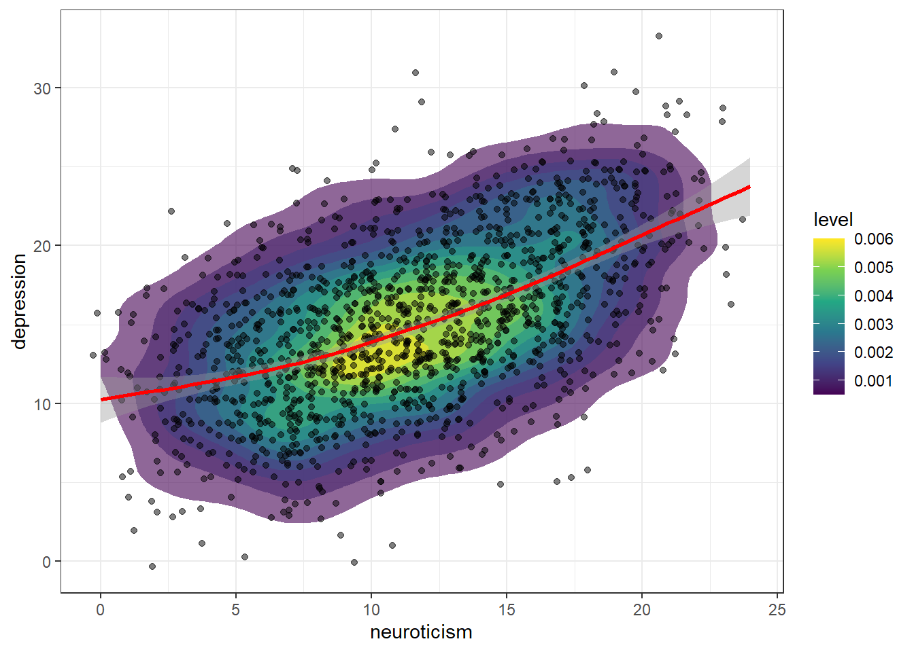
This plot is probably a little bit too “busy” to be really useful - when you have so many options for what you can fit in a plot, you have to make good choices about what’s most important to include.
8.5 Scales and themes: changing the look of your plot
Once you have a functioning ggplot plot put together,
you can start customising the look of it easily by using
different scales (which change how a variable maps
to a particular aesthetic feature of the plot) and
themes (which change more general elements
of the plot like the background colour).
8.5.1 Scales
Scales serve a few different purposes:
- Changing the order of values: e.g. reversing the order on the x-axis
- Transforming values, e.g. log-transforming your y-axis
- Choosing how your values will be represented - particularly their colours.
The scales in ggplot generally have two parts to their names, like
scale_x_log10() and scale_colour_gradient(). The two parts indicate:
- Which aesthetic of the plot the scale is for.
- What kind of scale will be applied for that aesthetic
Scale examples
If you just need to reverse the order of a continuous x or y-axis, use
scale_x_reverse() or scale_y_reverse(). Returning to our
scatter plot from above:
ggplot(cow,
aes(x = neuroticism, y = depression, colour = sex)) +
geom_point(alpha = 0.4) +
scale_y_reverse()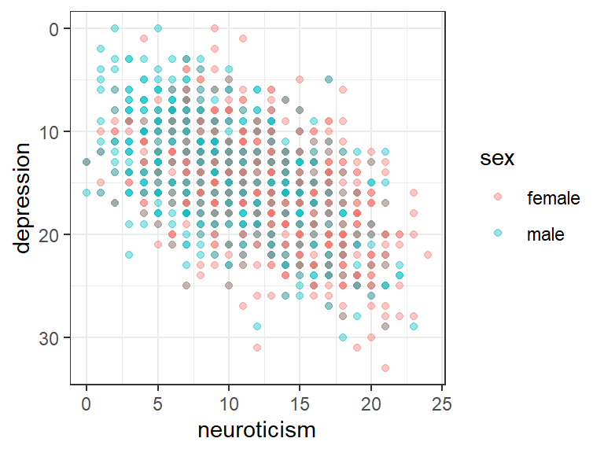
Log-transforms can be useful for variables like income that are skewed
and have a few very large values. Use scale_x_log10() or scale_y_log10(),
and note how the axis increases in multiples rather than a constant rate:
ggplot(cow, aes(x = sex, fill = volunteer)) +
geom_bar(position = "dodge") +
scale_y_log10()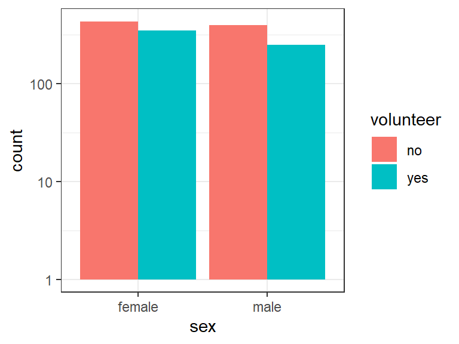
Changing the colour scale you’re using in your plot is useful both because you can pick a more meaningful scale, and because it can really improve the overall look and clarity of your plot. Picking colours that look good is a valid reason!
To demonstrate some of these colour scales, we’ll first create a categorical variable that splits our depression scores up into 5 categories. We’ll also create a table of the mean neuroticism and extraversion scores in each category:
cow$depression_cat = cut(
cow$depression, breaks = 5,
labels = c("Very low", "Low", "Average",
"High", "Very high"))
dep_tab = cow %>%
group_by(depression_cat) %>%
summarize(introversion = mean(neuroticism),
extraversion = mean(extraversion)) %>%
pivot_longer(-depression_cat,
names_to = "Outcome",
values_to = "Mean")Plotting with the default colours doesn’t give great results:
dep_cat_plot = ggplot(
dep_tab,
aes(x = Outcome, y = Mean, fill = depression_cat)) +
geom_col(position = 'dodge', colour = 'black') +
# \n creates a newline, i.e. splits the label into multiple lines
labs(fill = "Depression\nCategory") +
theme_bw()
dep_cat_plot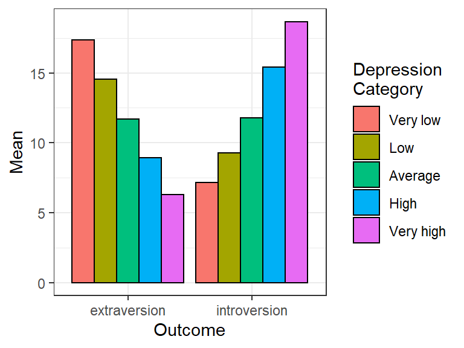
Since the categories are increasing, we could use a colour scale
that maps colours in an ordered way. The viridis colour scales
look great and have a few useful properties like converting to
greyscale well and being colour-blind friendly. Using an ordered
colour scale helps to convey some of the meaning of the different
depression categories:
dep_cat_plot +
# Tweaked slightly to avoid using a very bright yellow
# at the top end of the scale
scale_fill_viridis_d(option = "C", end = 0.9)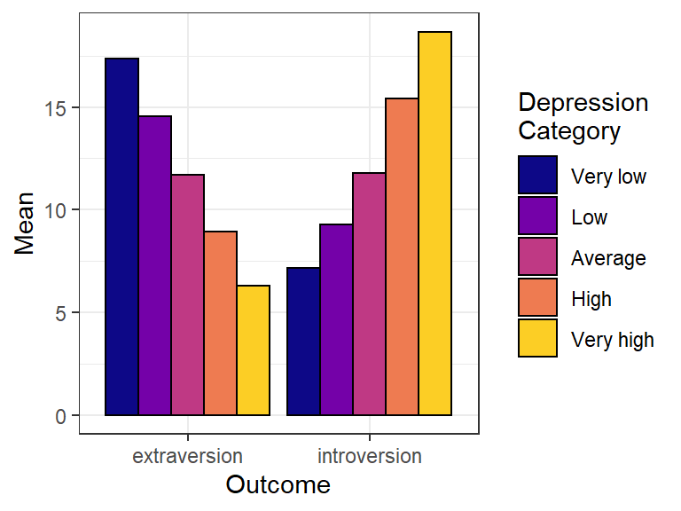
The aesthetic that determines the colour of the bars is fill, not colour, so we use scale_fill to change it. Check whether your plot is using the fill or the colour aesthetic to make sure you change the right one.
We could also use a diverging colour scale that emphasises how far each category is from the average. ggplot includes some great scales from ColorBrewer that serve this purpose:
dep_cat_plot +
scale_fill_brewer(type = "div")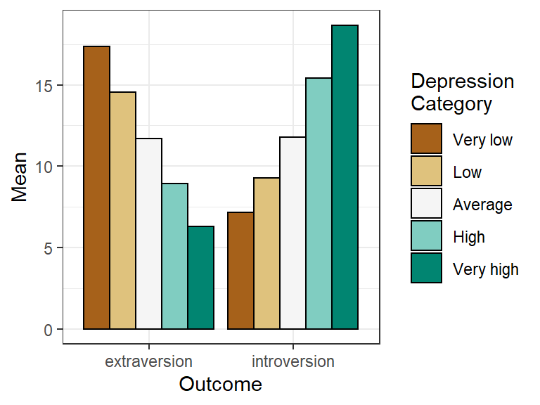
Feel free to experiment with different scales when producing your own plots!
8.5.2 Themes
Scales affect how your actual data is displayed, but to control the overall look of the plot (background colour, font etc.), we use themes. To use a different theme, just add it to your plot:
dep_cat_plot +
scale_fill_viridis_d() +
theme_classic()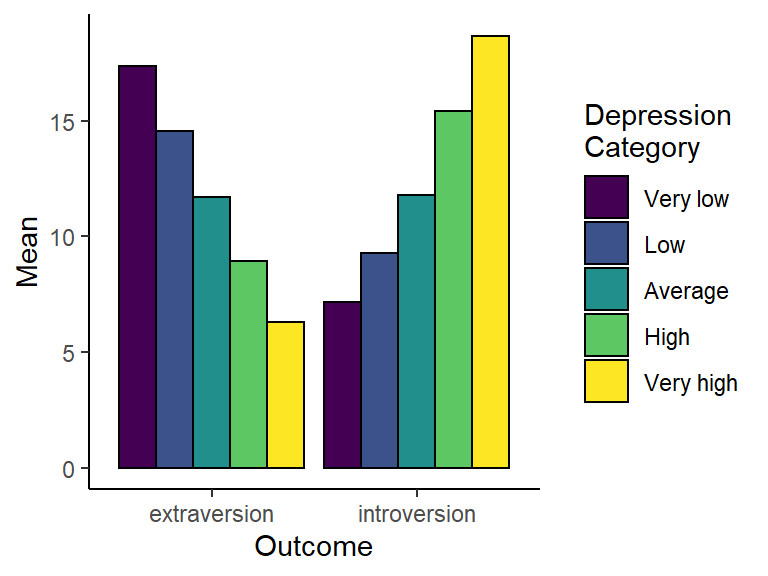
# sjPlot should have been installed during an earlier
# session, otherwise install it now
dep_cat_plot +
scale_fill_viridis_d() +
sjPlot::theme_538()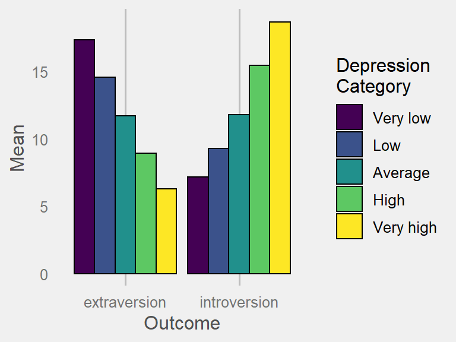
8.5.2.1 Tweaking themes
Every aspect of a plot’s theme can be tweaked using theme().
You can see the full list of properties that can be changed by looking
at ?theme.
The full details are beyond the scope of this brief introduction,
but one useful tweak is turning off particular elements by setting
them to element_blank(). We can disable the title on the x-axis:
dep_cat_plot +
scale_fill_viridis_d() +
theme(axis.title.x = element_blank())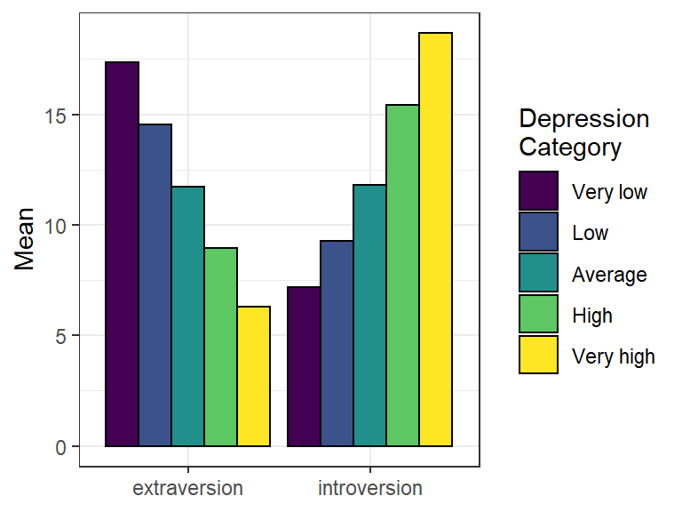
8.5.3 Finding extra scales and themes
Packages like ggthemes provide extra scales and themes: install
them, load them and you can use the scales and themes just like
the built in ones by adding them to your plot. I particularly like
ggthemes::theme_fivethirtyeight()
and ggthemes::scale_colour_tableau(), but there a wide variety
of useful and great-looking options out there.